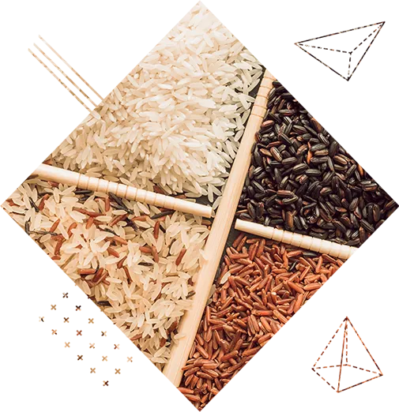
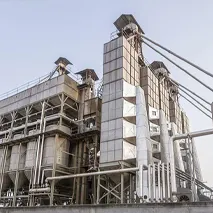
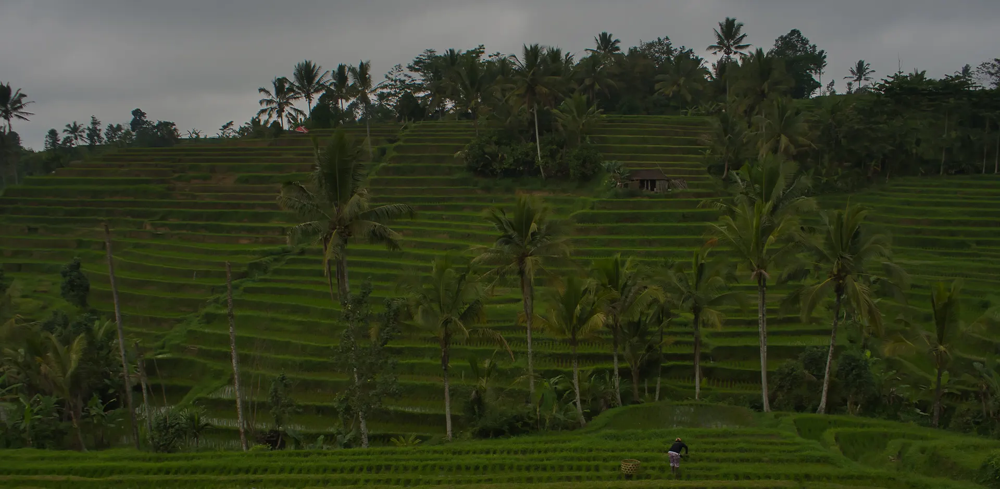

A mill built for controlled processing from paddy to pack.
See the plant systems used for cleaning, parboiling, drying, milling, sorting and packaging at our Village Daha Madanpur manufacturing base.

The plant
Modern equipment across the processing line.
The stated daily production capacity is 230 metric tons. The mill uses pre-cleaners, de-huskers, polishers, sortex equipment, silky polishers, rice bins and magnets across the manufacturing flow.
- Paddy procurement, drying and warehousing.
- Cleaning, de-stoning, grading and separation.
- Parboiling, drying, milling, sorting and polishing.
- Packaging and logistics coordination.
Processing systems
Four connected parts of the mill.
Parboiling
Treated soft water, controlled temperatures and sensor-equipped soaking bins support the parboiling process.
Drying
Mechanised, sensor-based temperature control is used to promote uniform drying and reduce grain breakage.
Milling
Cleaning, de-husking, sorting, polishing, magnets and rice bins support a controlled production flow.
Packing
Product, pack format, quality brief and logistics are coordinated against the accepted order.
Mill operations
Production is only one part of dependable supply.
The buyer's specification, quality evidence, packaging, documentation, destination and dispatch plan all have to remain aligned through the order.
Send a Production Enquiry

Need mill capacity for a real order?
Send product, process, volume, pack, destination and required timeline for a feasibility review.